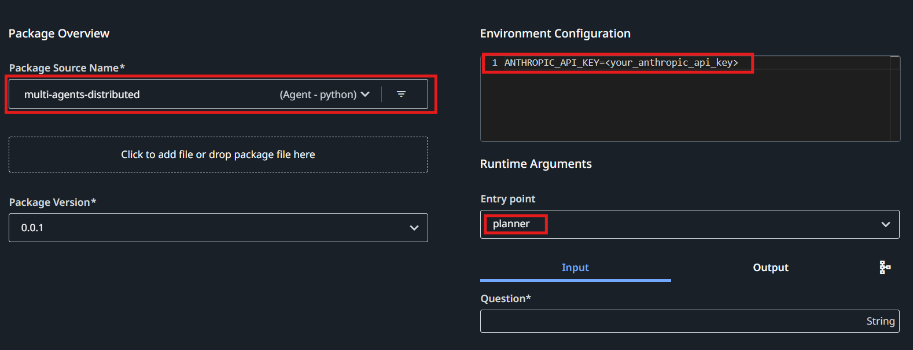
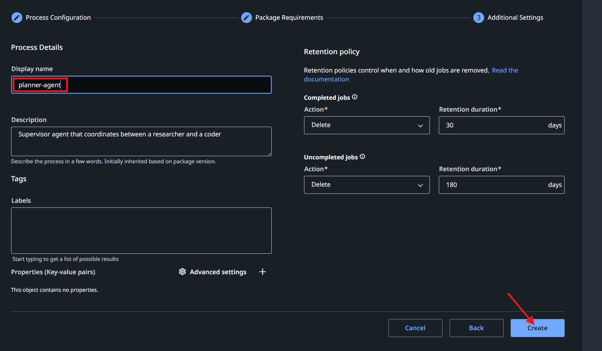
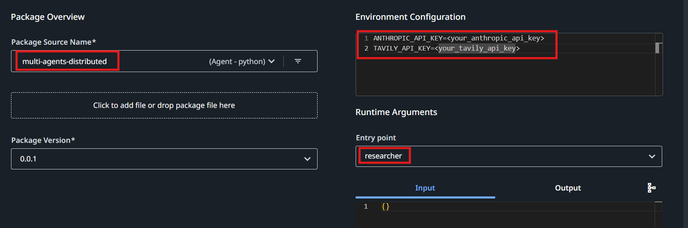
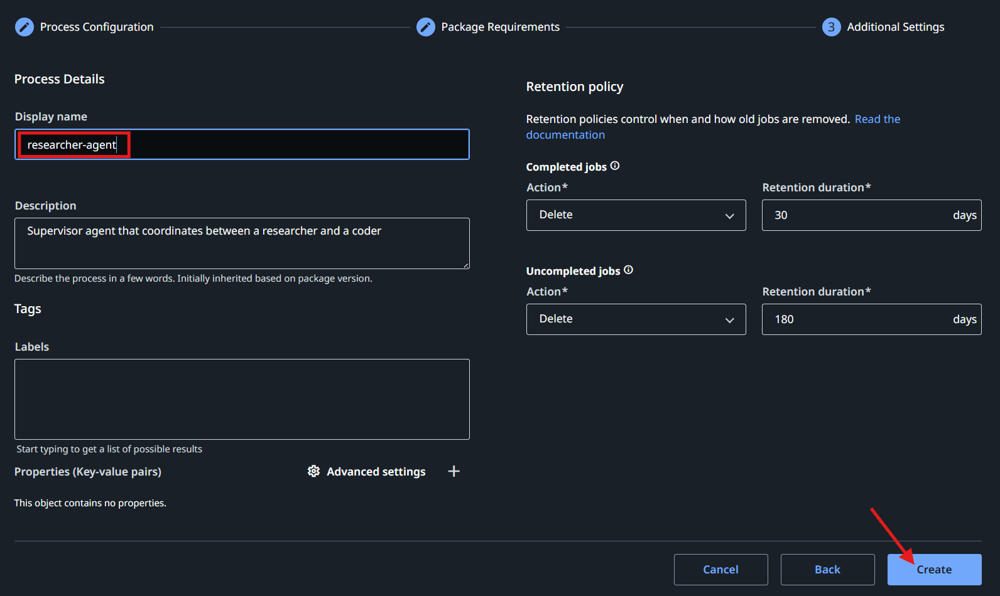
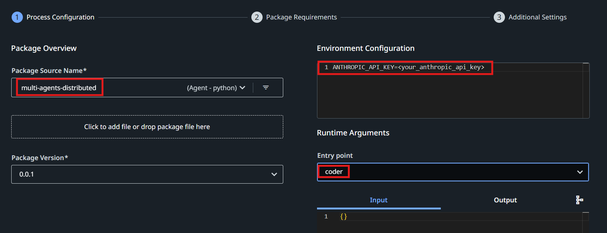
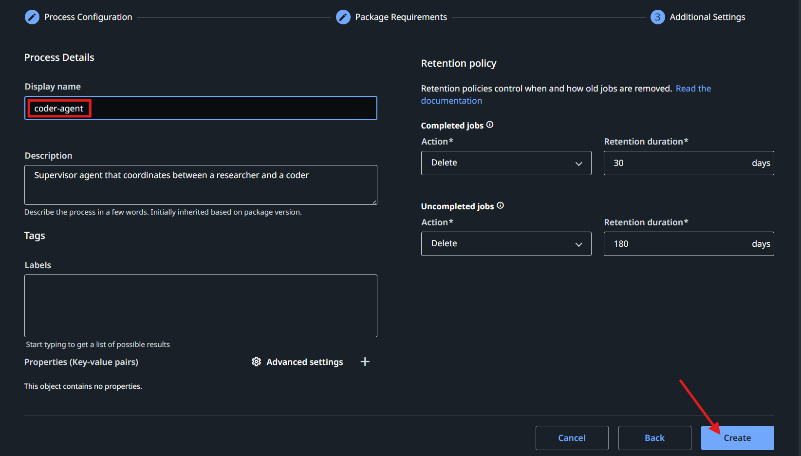

Multi-Agent Task Execution System¶
This repository implements a multi-agent system that decomposes complex tasks into discrete steps, routing them to specialized agents for execution. The system comprises three main components:
- Planner Agent: Orchestrates the workflow by planning task execution and routing subtasks to worker agents.
- Researcher Agent: Gathers information, formulas, and reference materials without performing calculations.
- Coder Agent: Executes calculations and evaluates formulas with specific values.
Each agent operates independently and can be deployed as a separate process, while still being packaged together as part of an Orchestrator Agent Package.
System Architecture¶
The system utilizes LangGraph to create a directed graph of agents that can communicate and share state.
Planner Agent Graph¶
---
config:
flowchart:
curve: linear
---
graph TD;
__start__(<p>__start__</p>)
input(input)
create_plan(create_plan)
supervisor([supervisor]):::last
invoke_agent(invoke_agent)
__start__ --> input;
create_plan --> supervisor;
input --> supervisor;
invoke_agent --> supervisor;
classDef default fill:#f2f0ff,line-height:1.2
classDef first fill-opacity:0
classDef last fill:#bfb6fc
Researcher Agent Graph¶
---
config:
flowchart:
curve: linear
---
graph TD;
__start__([<p>__start__</p>]):::first
__end__([<p>__end__</p>]):::last
__start__ --> researcher___start__;
researcher___end__ --> __end__;
subgraph researcher
researcher___start__(<p>__start__</p>)
researcher_agent(agent)
researcher_tools(tools)
researcher___end__(<p>__end__</p>)
researcher___start__ --> researcher_agent;
researcher_tools --> researcher_agent;
researcher_agent -.-> researcher_tools;
researcher_agent -.-> researcher___end__;
end
classDef default fill:#f2f0ff,line-height:1.2
classDef first fill-opacity:0
classDef last fill:#bfb6fc
Coder Agent Graph¶
---
config:
flowchart:
curve: linear
---
graph TD;
__start__([<p>__start__</p>]):::first
__end__([<p>__end__</p>]):::last
__start__ --> coder___start__;
coder___end__ --> __end__;
subgraph coder
coder___start__(<p>__start__</p>)
coder_agent(agent)
coder_tools(tools)
coder___end__(<p>__end__</p>)
coder___start__ --> coder_agent;
coder_tools --> coder_agent;
coder_agent -.-> coder_tools;
coder_agent -.-> coder___end__;
end
classDef default fill:#f2f0ff,line-height:1.2
classDef first fill-opacity:0
classDef last fill:#bfb6fc
Agent Responsibilities¶
- Planner Agent:
- Takes user questions and formulates execution plans.
- Routes tasks to appropriate worker agents.
- Manages execution flow and state tracking.
-
Returns final results to the user.
-
Researcher Agent:
- Retrieves information using a Tavily search tool.
- Provides factual content, definitions, and formulas.
-
Does not perform calculations (strictly enforced).
-
Coder Agent:
- Executes calculations using Python code.
- Evaluates formulas with specific input values.
- Returns precise numerical results.
Usage¶
Running the System¶
To run the entire system, use the following command with the complete JSON input:
uipath run planner '{"question": "First, please state the Pythagorean theorem. Give only the formula, using variables a, b, and c. Then apply this formula to calculate the value when a=2 and b=3."}'
Debugging Individual Agents¶
You can debug individual agents by invoking them directly:
Researcher Agent¶
Run the researcher agent with:
uipath run researcher '{"messages":[{"content":"State the Pythagorean theorem formula using variables a, b, and c","type":"human"}]}'
Coder Agent¶
Run the coder agent with:
uipath run coder '{"messages":[{"content":"Let me help you state the Pythagorean theorem formula. The Pythagorean theorem is a fundamental mathematical formula that describes the relationship between the sides of a right triangle.\n\nThe formula is:\n\na² + b² = c²\n\nWhere:\n- a and b are the lengths of the two legs (the sides adjacent to the right angle)\n- c is the length of the hypotenuse (the longest side, opposite to the right angle).","type":"human","name":"researcher-agent"},{"content":"Calculate the result using the formula when a=2 and b=3","type":"human"}]}'
Sample Workflow¶
- User submits a question about the Pythagorean theorem.
- Planner creates an execution plan with two steps:
- Step 1: Researcher agent retrieves the Pythagorean theorem formula.
- Step 2: Coder agent applies the formula to calculate the result for a=2, b=3.
- Planner executes Step 1 by invoking the researcher agent.
- Researcher agent returns the formula a² + b² = c².
- Planner executes Step 2 by invoking the coder agent.
- Coder agent calculates c = √(2² + 3²) = √(4 + 9) = √13 ≈ 3.606.
- Planner combines the responses and returns the final answer to the user.
Steps to Execute Project on UiPath Cloud Platform¶
-
Clone the Repository
-
Navigate to the Sample Directory
-
Windows:
-
Unix-like Systems (Linux, macOS):
-
Create and Activate a Virtual Python Environment
-
Authenticate with UiPath Cloud Platform
Note: After successful authentication in the browser, select the tenant for publishing the agent package.
-
Package and Publish Agents
Select the feed to publish your package:👇 Select package feed: 0: Orchestrator Tenant Processes Feed 1: Orchestrator Folder1 Feed 2: Orchestrator Folder2 Feed 3: Orchestrator Personal Workspace Feed ... Select feed number: 3Note: When publishing to personal workspace feed, a process will be auto-created for you.
-
Create Agent Processes in Orchestrator
-
Planner Agent


-
Researcher Agent


-
Coder Agent


Note: Ensure that the display names for the coder and researcher agent processes are coder-agent and researcher-agent, and that all 3 agents are placed in the same folder.
- Run the Planner Agent with Any Input Question
Tip: For a five-step action plan, consider using the following input:
Could you find a Python solution for the N-Queens puzzle for N=8? Please analyze why this solution works, considering the key programming concepts it employs. Then, revise the solution to handle a dynamic value of N, where N is any positive integer. After that, research the time and space complexity of this new solution. Lastly, demonstrate this revised Python solution with N=10.
Implementation Details¶
The system is implemented using:
- LangGraph for agent orchestration
- LangChain for agent creation and tool integration
- Claude 3.5 Sonnet for LLM capabilities
- Tavily for search functionality in the researcher agent
- Python REPL for code execution in the coder agent
Requirements¶
- Python 3.10+
- LangGraph
- LangChain
- Anthropic API key
- Tavily API key